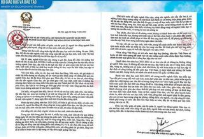

TRƯỜNG THPT HẢI LĂNG TỔ CHỨC CHUYÊN ĐỀ BỘ MÔN TOÁN CẤP TỈNH THÀNH CÔNG TỐT ĐẸP

Thực hiện công văn Số: 2794 /SGDĐT-GDTrH-GDTX chiều ngày 30/11/2023 tại trường THPT Hải Lăng đã diễn ra Chuyên đề bộ môn Toán cấp trung học phổ thông.Thực hiện công văn Số: 2794 /SGDĐT-GDTrH-GDTX chiều ngày 30/11/2023 tại trường THPT Hải Lăng đã diễn ra Chuyên đề bộ môn Toán cấp trung học phổ thông.
THƯ CỦA CHỦ TỊCH NƯỚC GỬI NGÀNH GIÁO DỤC NHÂN DỊP KHAI GIẢNG NĂM HỌC MỚI 2021-2022

Nhân dịp khai giảng năm học 2021-2022, Chủ tịch nước Nguyễn Xuân Phúc đã gửi gắm niềm tin và hy vọng đối với ngành Giáo dục qua bức thư gửi tới toàn ngành. Cổng thông tin điện tử trường THPT Hải Lăng trân trọng đăng tải toàn văn bức thư.